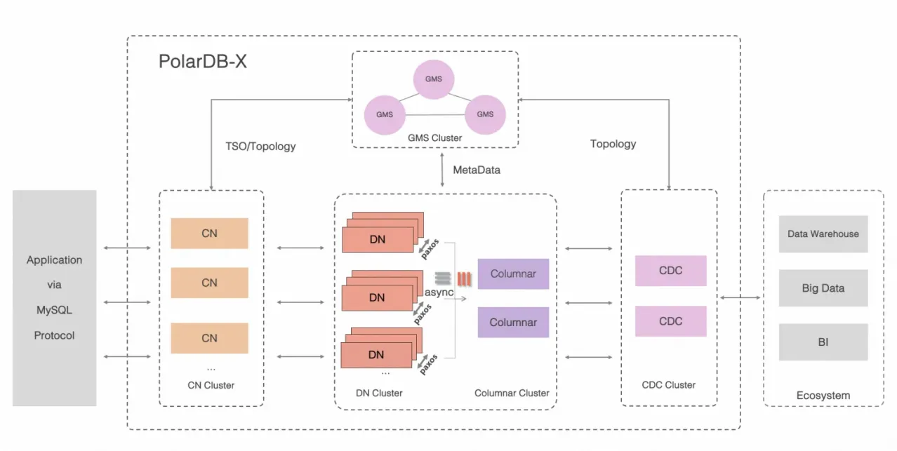
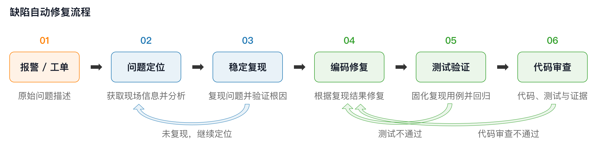
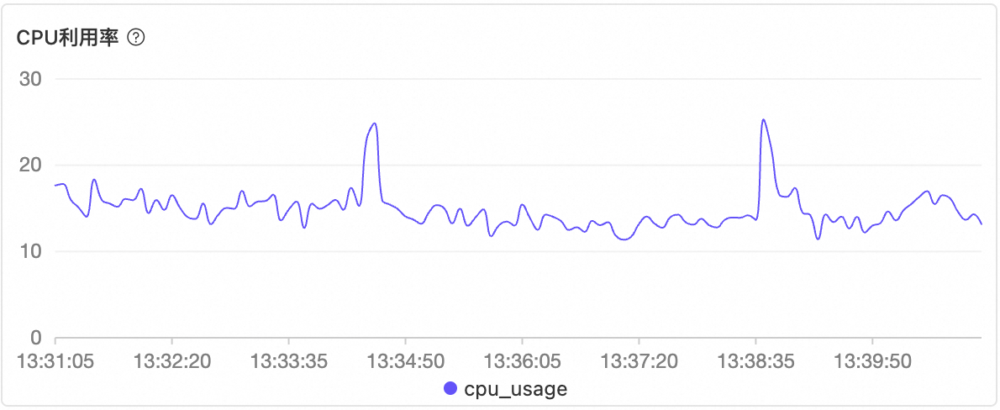
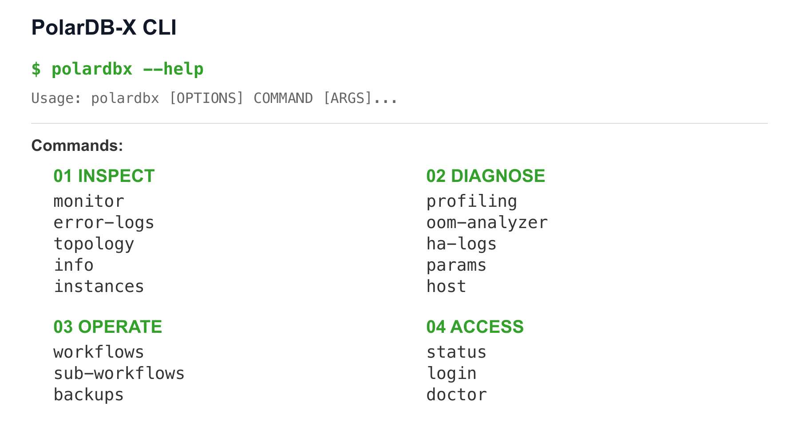
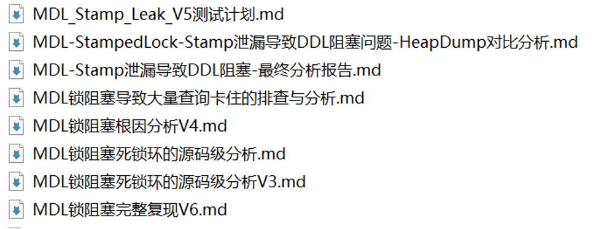
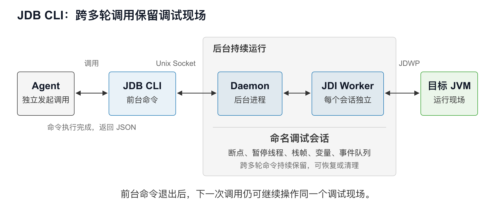
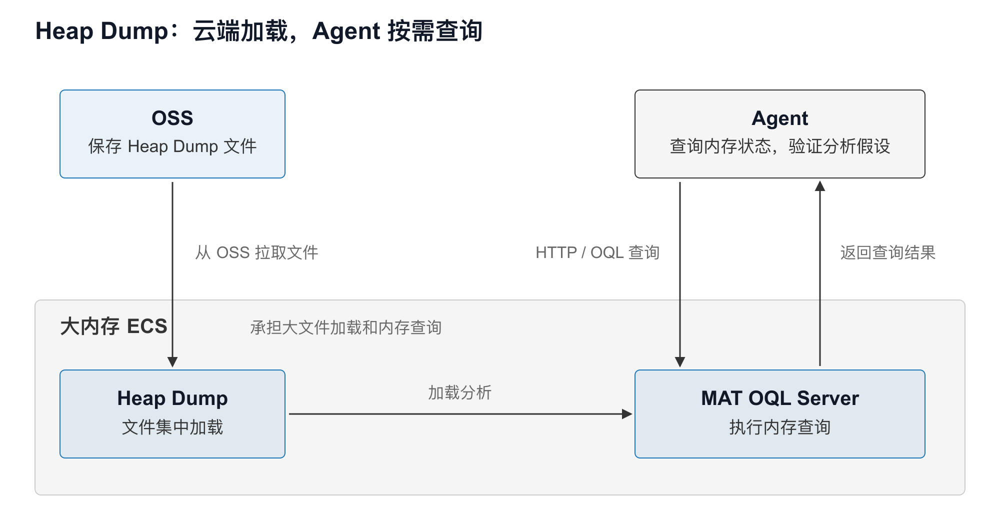
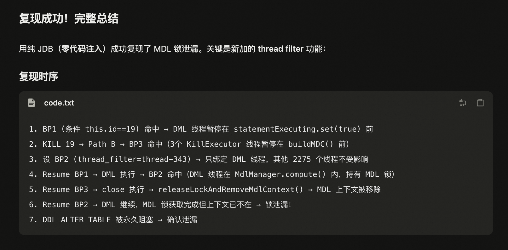
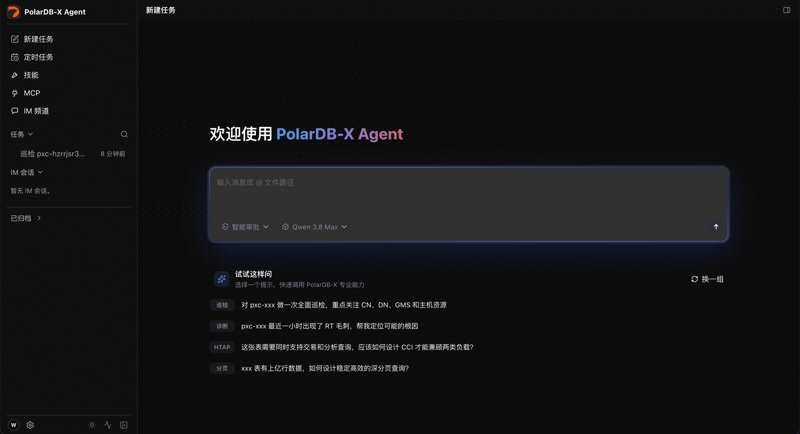

从报警到自动修复，PolarDB-X 的 Loop 工程实践¶
一、从编码提效到端到端提效¶
随着 Agent 逐步参与日常研发，编码和测试已经成为常见的应用场景。但研发工作还包括需求形成、方案设计、问题分析、环境准备和结果验证，这些环节同样需要大量投入。要进一步提升整体效率，就需要让 Agent 从参与编码和测试，扩展到自主推进更完整的研发任务，实现端到端交付，从而减少各环节的人工操作与反复交接，缩短交付周期。
PolarDB-X 团队也在探索如何通过 Agent 提升研发效率。PolarDB-X 是一款云原生分布式数据库，高度兼容 MySQL 生态，具备高可用、水平扩展和 HTAP（混合事务与分析处理）能力。整体架构如下图所示。

图 1：PolarDB-X 整体架构
1.1 不同研发任务的 Agent 协作方式¶
数据库的分布式架构增加了问题定位和验证的复杂度，对正确性、可靠性和稳定性的高要求，也决定了研发成果必须经过充分验证。在满足这些质量要求的前提下，我们针对两类常见研发任务，采用不同的 Agent 协作方式。
第一类是新功能开发和已有功能优化。 例如优化分布式事务、实现新的数据压缩功能。这类任务通常需求明确，但实现方案需要综合考虑功能完整性、兼容性、性能和可靠性，难以在开发之初一次确定，需要根据实现和验证结果持续改进。对于这类任务，我们采用研发主导、Agent 执行的协作方式：研发负责方案和关键决策，并在开发、测试过程中持续把关；Agent 则承担具体的编码和测试工作。由于编码和测试原本占据大部分工作量，这种协作方式能够显著提升开发效率，缩短研发周期。
第二类是报警、工单处理和缺陷修复，这也是团队长期面临的效率痛点。 在原有处理流程中，研发不仅需要完成编码和测试，还需要承担前期的问题分析、根因定位和修复需求产出。一次修复最终可能只涉及几行代码，但研发需要收集实例信息、监控和日志，结合源码排查原因，并搭建环境、构造触发条件，验证问题能否稳定复现。完成代码修改后，还需要验证修复效果、执行回归测试，并推动修复合并。前期分析和后续验证需要大量投入，仅让 Agent 协助编码，能够节省的时间非常有限。
好在，第二类任务通常具有具体的故障现象，可以通过复现验证原因假设，再通过修复前后的对照测试检验修改效果。虽然排查过程复杂，但稳定复现和测试结果能够提供明确的验收依据，为 Agent 自主完成分析、修复和验证创造了条件。
因此，在探索 Agent 端到端自主处理时，我们选择从第二类任务入手，目标是让 Agent 从报警或工单出发，在无需人工干预的情况下，自主完成现场分析、根因验证、稳定复现、代码修复、测试验证和修复提交，仅由研发参与最终审查，大幅提升缺陷处理效率。
二、从报警到自动修复¶
2.1 整体流程¶
PolarDB-X Loop 以报警或工单为输入，由 Agent 自主完成问题定位、稳定复现、编码修复和测试验证，最终提交研发进行代码审查。整体流程如下图所示。

图 2：PolarDB-X 缺陷自动修复流程。验证结果决定下一步继续推进，还是返回分析与修改。
在这一流程中，Agent 首先获取现场信息，分析可能的原因，并尝试复现问题。如果实际运行结果与预期不符，就根据新证据调整分析，继续验证；确认原因并稳定复现后，再修改代码，将复现过程固化为测试用例，通过修复前后的对照验证和完整的回归测试后，提交研发评审。
让 Agent 自主完成流程，还需要解决一个关键问题：如何保证它产出的结果可靠。在引入 Agent 时，我们往往更关注编码阶段，希望通过 Skills 或操作约束保证代码正确性。但对于缺陷修复，我们认为稳定复现才是整个流程中最重要的一步，因为后续的代码修改和验收，都依赖于对原始问题的准确理解与验证。
稳定复现因此贯穿三个阶段：在问题分析阶段，Agent 通过复现检验自己的分析；在编码修复阶段，Agent 将复现过程固化为测试用例，验证代码修改的效果；在代码评审阶段，研发以复现用例和验证结果为依据，检查 Agent 是否真正修复了最初的问题。
要让这一机制落地，Agent 既需要获取完整的现场信息，也需要具备运行、调试和复现问题的能力，并在修复后完成充分的测试验证。下面将分别介绍现场信息获取、运行验证和修复交付三个环节的工程实践。
2.2 现场还原与问题分析¶
报警通常只反映某个指标或某个 SQL 的异常，定位问题还需要关联实例版本、拓扑、监控、日志和源码。多组件协作使同一现象可能对应不同原因；线上多版本并存，也使已在新版本修复的问题可能继续出现在老版本中。因此，排查既要还原故障现场，也要结合实例版本和修复记录识别已知问题。
从人工整理需求到 Agent 自主分析¶
早期，我们先由研发还原现场、分析原因，再将结论整理成修复需求交给 Agent。这样能够利用 Agent 的编码能力，但最耗时的排查工作仍由研发承担。
随后，我们尝试让 Agent 直接分析现场材料。在我们的实践中，Agent 在现场信息梳理方面往往比人工表现更好：它能够更清楚地梳理问题发生前后的时间线，更擅长从海量日志中检索相关信息，还能发现人工排查时遗漏的关键线索。
这些表现促使我们将 Agent 的任务起点，从接收人工整理的修复需求，前移到直接接收报警或工单。由 Agent 自主确认问题发生在哪个实例、涉及哪些节点、运行什么版本，以及异常前后发生了什么，将现场还原和问题分析一并纳入自主处理流程。
自主分析要求 Agent 能沿线索持续查询：发现节点异常后查询同期日志，发现状态变化后检查对应源码，在查询与分析之间不断迭代。
这一阶段应形成问题现象、时间线、相关证据和待验证的原因假设，为后续复现提供明确的检查目标。
通过结构化接口支持按需查询¶
早期提供给 Agent 的现场材料主要是人工选取的监控截图和日志片段。需要查看其他节点或扩大时间范围时，Agent 只能等待研发补充材料。

图 3：CPU 使用率监控截图。
要让分析过程不再依赖人工补充材料，就需要为 Agent 提供常用平台的结构化接口或 CLI 工具。这样，Agent 在分析中发现信息不足时，可以自主调整查询对象和时间范围，获取所需数据后继续分析。
为便于这些工具查询和关联现场信息，日志等数据也需要集中管理。如果日志分散在各个生产节点上，查询仍需逐节点访问、检索文件并汇总结果；集中到统一平台后，Agent 就能通过统一入口获取不同节点、不同时间段的数据。
以阿里云 CLI（aliyun）为例，Agent 可查询指定时段内两个计算节点的 CPU 使用率：
aliyun polardbx DescribeDBNodePerformance \
--RegionId cn-hangzhou \
--DBInstanceName pxc-xxxxxxxxx \
--DBNodeIds "pxc-i-xxxxxxx,pxc-i-yyyyyyyy" \
--CharacterType polarx_cn \
--Key Cpu_Usage \
--StartTime 2026-09-03T03:51Z \
--EndTime 2026-09-03T03:53Z
查询结果以 JSON 格式返回，包含节点、指标和采样点。以下为简化后的返回结果示例，标识与数值仅用于演示：
{
"PerformanceKeys": [
{
"DBNodeId": "pxc-i-xxxxxxx",
"Measurement": "Cpu_Usage",
"Points": [
{ "Timestamp": 1788407460000, "Value": "92.6" }
]
},
{
"DBNodeId": "pxc-i-yyyyyyyy",
"Measurement": "Cpu_Usage",
"Points": [
{ "Timestamp": 1788407460000, "Value": "28.3" }
]
}
]
}
Agent 根据返回数据识别异常节点和时段，按需扩大查询范围、关联日志，持续推进分析，无须人工补充现场材料。
将存量平台封装为 CLI¶
不过，有些存量平台缺少维护，也未必有人提供相应的 CLI 工具。对于这类平台，如何让 Agent 获取所需信息？
先看一个例子。阿里内部有一款很受欢迎的“抢会议室” CLI。
通过这个工具，一条命令即可预订会议室，还可以配合定时任务自动抢订：
ali meeting book -r <roomId> -s <start> -e <end>
这个工具的作者是一位普通研发人员，在没有平台源码的情况下，就打通了会议室预订的整套操作流程。这给了我们启发：即使平台没有提供现成工具，我们也可以自行将所需功能封装为 CLI。
我们进一步让 Agent 完成这项工作：参考已有 CLI 实现，自主操作浏览器、使用目标平台功能，分析接口请求和认证方式，再编写代码，将所需功能封装出来。
通过这一方式，我们用约一周时间，让 Agent 将常用系统的监控、日志和拓扑查询功能封装为 polardbx CLI，供后续排查调用。
polardbx --help 展示的命令分组如下：

图 4：自建 PolarDB-X CLI 的命令分组。
此外，我们还将诊断方法、CLI 工具说明和排查经验整理为 Skills。例如，polardbx-diagnostics 指导 Agent 确认问题现象、查询拓扑和基础指标、定位异常时段及组件，再根据原因假设选择日志查询、火焰图等手段验证，并据此调整分析方向。该 Skill 还配套提供采集脚本、指标字典、日志查询模板和常见问题诊断参考，供 Agent 按需查阅和调用。
2.3 通过运行验证分析结论¶
“纸上得来终觉浅，绝知此事要躬行。”代码中的可疑路径是否真正触发了故障，需要在实际运行中验证。对于 Agent 而言，提出原因假设之后，还需要能够自行检验、修正判断。下面的 MDL 锁泄漏案例，正是我们补齐这一能力的起点。
MDL 锁泄漏案例：静态分析与实际执行路径的偏差¶
我们曾遇到一个五年前就已出现的 MDL（元数据锁）泄漏问题。该问题在线上环境中低概率发生，会导致后续修改表结构的操作持续阻塞。由于难以复现，多年来始终未能明确根因。
在一次线上排查中再次遇到该问题后，我们尝试借助 Agent，结合现场信息和源码进一步分析。Agent 很快生成报告，列出代码位置、执行过程和可能原因，并提出了以下关于主线程（ServerExecutor）与 KillExecutor 线程并发时序的解释。该解释随后被人工验证推翻：
| 时序 | 主线程（ServerExecutor） | KillExecutor 线程 |
|---|---|---|
| 1 | 获取第一把 MDL 锁，并记录在当前连接的锁记录集合中 | — |
| 2 | 开始获取第二把锁，取得同一个锁记录集合，但尚未写入新记录 | — |
| 3 | — | 响应用户的 KILL 操作，开始关闭连接 |
| 4 | — | 释放第一把锁，并将已清空的锁记录集合从连接索引中移除 |
| 5 | 继续获取第二把锁，将记录写入已脱离索引的集合 | — |
Agent 当时的推测结论是：第二把锁的记录无法再通过连接索引找到，导致锁泄漏。
研发经过约两小时验证，发现该解释不成立。Agent 根据反馈多次调整分析，但仍未形成可靠结论，期间生成了多份报告和测试文档：

图 5：Agent 在多轮分析中生成的报告和测试文档。
偏差来自静态推演与实际执行的差异。连接终止的处理路径受程序状态影响，锁也存在多处释放路径。仅阅读代码容易遗漏状态变化的先后顺序，将可能发生的路径误判为实际执行的路径。
研发验证这些判断时，需要准备环境、设置断点、控制线程执行顺序，必要时还要检查内存中的对象状态。当这些手段只有人能使用时，Agent 每提出一个假设，就需要研发接手验证。
因此，我们开始把同样的调试与分析能力提供给 Agent，让它能够观察实际运行结果，自行发现假设中的错误，再继续排查。
通过 JDB CLI 调试运行中的 Java 程序¶
首先，我们为 Agent 提供了直接调试 Java 程序的能力。JDK 自带的 jdb 主要面向人在终端中的持续交互。Agent 使用它时，需要维护交互进程，不断发送命令、读取输出，并在多次调用之间保持调试状态，使用起来较为繁琐。
为此，我们基于 Java 调试接口 JDI 重新实现了 JDB CLI，通过后台进程持续维护调试会话。前台每条命令执行后即可退出，下一次调用仍能继续操作同一个调试现场，查看线程、断点和变量。
这样，Agent 可以先暂停程序、观察状态，再结合源码分析，随后回到同一会话继续执行，将调试过程与分析过程衔接起来。

图 6：前台命令独立调用，后台持续保留调试会话。
另一个关键能力是指定线程断点：只有目标线程会触发断点，命中时也只暂停该线程，其他线程继续运行。配合线程恢复操作，Agent 可以控制相关线程的执行顺序，验证特定时序下的程序行为。
前述 MDL 低概率并发问题的复现，就用到了这项能力。Agent 能够自行控制线程时序，检查程序是否按分析中预想的路径执行，并根据实际结果修正判断。
通过 Heap Dump 查询内存现场¶
除了调试运行中的程序，Agent 还需要检查故障时的内存状态。Heap Dump 是 Java 程序在某一时刻的堆内存快照，研发可以从中查看对象字段的值、引用关系和内存占用。
以前述 MDL 问题为例，排查时需要通过内存分析确认锁是否泄漏，检查相关锁对象、锁记录及其引用关系。掌握实际的内存状态后，才能结合源码进一步分析泄漏原因。
Heap Dump 文件通常很大。我们将其放在大内存云服务器上集中加载和处理，并为 Agent 提供查询接口。Agent 可以按需查询对象字段和引用关系，根据返回结果继续检查相关对象，自主验证分析假设，无须由研发逐项查询后再提供材料。

图 7：大内存 ECS 加载 Heap Dump，Agent 通过 HTTP 接口发起 OQL 查询并获取结果。
分析完成后，Agent 还可以将分析记录和最终报告上传至展示平台，供研发后续查阅和复核。实践中，该平台已累计记录两千多份 Heap Dump 处理任务。
根据故障条件选择复现环境¶
具备调试和内存分析工具后，还需要为 Agent 准备能够实际运行和复现问题的环境。我们提供了两类环境，Agent 可以根据问题情况自行选择。
| 环境 | 适用情况 | 使用方式 |
|---|---|---|
| PolarDB-X Zero 临时实例 | SQL 报错、功能异常等简单问题的初步复现 | 创建最新版本的临时实例，完成验证后释放 |
| K8s 中的完整复现环境 | 依赖历史版本、特定拓扑，或需要控制并发时序的问题 | 按问题实例的版本和拓扑搭建，结合调试工具验证 |
对于需要控制并发时序的问题，Agent 可以在完整复现环境中配合前述调试工具，设置断点、控制相关线程的执行顺序，验证问题的触发条件。
这套环境也用于后续的修复验证。代码修改后，Agent 将修复后的版本部署到相应环境中，按照已经确认的复现步骤再次执行，检验原始问题是否得到解决。
从低概率触发到稳定复现¶
具备工具和环境后，Agent 开始自主验证 MDL 问题。初次尝试未触发故障，Agent 根据实际执行路径重新分析线程关系，调整断点和执行顺序。
经过几轮迭代，Agent 找到了之前遗漏的关键条件：要在连接进入语句执行状态之前发起 KILL，再控制后续关闭连接与获取 MDL 锁的执行顺序。
Agent 利用指定线程断点，将相关线程停在关键位置，再按需要的顺序恢复执行，最终复现了与原问题一致的锁泄漏和后续阻塞。原本依赖偶然调度的线程交错，被转化为可以主动构造的操作步骤。

图 8：Agent 通过指定线程断点控制执行顺序，复现 MDL 锁泄漏及后续 DDL 阻塞。
明确的触发条件、可重复的操作步骤，以及与原始故障一致的现象，为研发复核提供了运行依据。控制关键时序后，还可在相同条件下对照修复前后的行为，避免因故障未被偶然触发而误判修复效果。
根因和触发条件得到验证后，Agent 就能明确需要修复的问题，并以复现用例确定验收条件，继续推进代码修改。
2.4 以稳定复现作为修复交付门禁¶
稳定复现用例是修复进入代码评审的必要条件。
Agent 将稳定复现的过程固化为测试用例。对于前述并发问题，确认触发时序后，可以通过特殊 Hint 在关键位置注入延迟，构造可重复执行的复现用例。这个用例在修复前必须能触发原来的问题，修复后必须能正常通过。只有完成这组验证，并通过完整的回归测试，代码才能进入评审。 如果没有通过，就继续分析和修改，直到满足这些要求。
先审查复现证据，再审查代码修改¶
满足上述要求后，Agent 提交合并请求，附带代码修改、复现用例、修复前后验证结果和回归测试结果。
研发先检查复现用例，对照原始问题确认其覆盖目标故障，再审查代码修改。审查通过后，按既有流程合并。
现场收集、根因排查、复现和测试验证由 Agent 自主完成后，研发可以围绕提交的证据和代码开展审查，无须再逐项承担前述工作。提效范围由编码环节扩展到完整的缺陷处理过程。
三、云端运行与实践效果¶
为支持 7×24 小时持续处理报警和推进修复，我们基于云端沙箱构建了 PolarDB-X Agent，承载上述流程的持续运行。
云端沙箱还提供了两方面的安全保障：一是环境隔离，将 Agent 的运行环境与研发的本地电脑隔离，即使沙箱环境被破坏，也不会影响本地开发环境；二是权限最小化，只授予 Agent 完成任务所需的权限，限制它能够访问和操作的范围。
团队成员可共用云端环境，协同配置和完善工具与流程。

图 9：PolarDB-X Agent 云端平台，承载 Loop 的持续运行。
在本文所述的半年实践中，所有报警先由 Agent 完成首轮处理和分析。团队从上万次报警中识别并记录了两百多个缺陷，其中超过 70% 可以稳定复现，并由 Agent 完成修复后进入代码评审。
四、面向其他团队的实践建议¶
这段实践形成了三条工程经验：
-
让研发系统可以被 Agent 调用。 将日志等现场材料集中管理，通过 CLI 或接口提供常用查询能力，并把诊断方法、工具说明和排查经验整理成 Skills，让 Agent 能够按需获取信息，沿着线索继续分析。
-
让研发过程可以验证。 提供复现环境、调试和内存分析工具，让 Agent 自行检验假设，再将稳定复现的过程固化为测试用例，通过修复前后的对照验证和回归测试检查修改效果。
-
让任务能够持续运行。 将 Agent 和任务流程放到云端，支持 7×24 小时持续处理报警、推进修复，并通过环境隔离和最小权限控制访问与操作范围。
其他团队可从具有明确验证方法的任务入手，接通所需信息和工具，完成从任务输入到结果交付的全流程，再根据实践逐步完善。Loop 的关键是让 Agent 根据运行结果修正分析、自主推进，并交付可复查的结果。